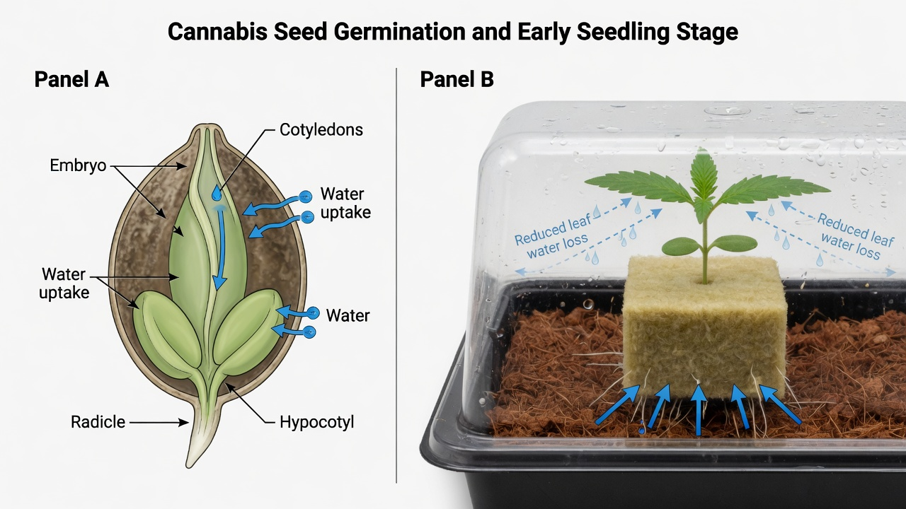

Seeds, germination and seedlings
This paper shows how to select a seed, how to germinate it, and how to keep the seedling in good condition. It also gives a definition of a seed. In the first three weeks, the seedling is very weak.
Purpose and scope
This paper is for a new grower. It shows the procedure from a dry cannabis seed to a seedling in good condition after two to three weeks. The paper gives a definition of each term where the term first occurs.
A seed is a small plant in a protective shell. The plant has no growth until the conditions are correct. Germination is the start of growth of the seed. A seedling is a small plant in the first weeks after germination.
Most of the errors that kill a plant occur in the first 21 days. Thus, when you do these first stages correctly, the other stages of cultivation are much easier. Read this paper before you get a seed and before you plant it.
- How to select a seed, how to germinate it, and how to keep the seedling in good condition until approximately day 21
- Germination is the start of growth of a seed. A seedling is a plant in the stage when it is weakest.
- Most problems of a new grower have their cause in the first three weeks (rot, seeds that do not germinate, and growth that stops)
- Each term has an easy definition where the term first occurs
Definitions
This section gives the terms that the other sections of this paper use. It is not necessary to know the terms at this time, because each term occurs again in the other sections.
| Term | Definition |
|---|---|
| Taproot / radicle | The first root of the seed. It becomes longer in the down direction. |
| Cotyledons | The two round ‘seed leaves’ of the embryo |
| True leaves | The serrated cannabis leaves that come after the cotyledons |
| Seed coat | The protective outer shell of the seed |
| Embryo | The small plant in the seed |
| Germination rate | The percentage of seeds that germinate |
| Viable | A seed that can germinate |
| Damping-off | Fungal rot at the bottom of the seedling stem |
Evidence and limitations
We want each paper to be correct. Thus we examine each paper for information that is not solid. This information comes from the view of one grower, from a small number of sources, or from grower methods that have no controlled test. We identify this information, and we do not show it as solid.
Frequently there is no paper for the decision that you must make. Then we use the reports of other growers and the methods that work in the rooms that we know. This information can help you, but it is not the result of a laboratory test. Use the methods that work for your plants, for your room and for your meters. If a table does not agree with your crop, use the data from your crop and record the difference.
- Water and a warm temperature are necessary for seeds. Damping-off occurs because of conditions that are too wet and have no air movement.
- Feminized seed is the result of XX×XX induction with STS, colloidal silver or an equivalent method. The seed does not give 100% protection from hermaphrodites.
- The length of the night controls flowering in photoperiod plants. Autoflower plants make flowers mostly because of their age and genetics.
- A germination temperature range of 21 to 25 °C, and slow PPFD ramps for seedlings.
- Use a humidity dome and a high RH at the start. Then decrease the humidity when the roots become longer.
- Visual checks of seed quality (color and firmness) as a first selection, and not as a laboratory test of viability.
- One germination percentage for all seed lots. The age of the batch and the storage have the largest effect.
- Very high germination rates for the paper towel method. The method is less important than the quality of the seed and the control of moisture.
If you find an error, make a report. We will correct it. Make the report on GitHub, with the name of the paper and the information that is incorrect. If you have a source, include it: Make a report of an accuracy problem. The regulations, labels and licenses of your area always override each procedure in these papers. The label weak in a paper shows the points where the risk of an error is highest.
Seed anatomy and quality check
A cannabis seed contains a small plant with all its parts. The plant has no growth until germination. A hard seed coat gives protection to the embryo. The embryo has a taproot, two cotyledons, and a small shoot. The seed also contains nutrients. The plant uses these nutrients in the first days of growth, before the true leaves supply nutrients to the plant.
You can see some signs of quality. Mature, viable seeds are hard and dark brown. They frequently have stripes or marks of a different color (‘tiger stripes’). They do not break when you apply small pressure with your fingers. Pale white, yellow, or light-green seeds are usually immature, because the grower harvested them before they were mature. These seeds frequently have a low germination rate, or they make weak plants.[1]
New seeds that you keep cool, dark, and dry stay viable for years. But the germination rate decreases when the age of the seeds increases. In this time, degradation of the oils in the seeds occurs.[2] A sealed container in a refrigerator is a good storage area for seeds that you do not use at this time.
| Check | Good (viable) seed | Bad (usually not viable) |
|---|---|---|
| Color | Dark brown, frequently with marks of a different color | White, yellow, or light green |
| Surface | Stripes (‘tiger stripes’) | No stripes, matt surface |
| Hardness | Hard. The seed does not become flat. | Soft. The seed changes shape when you apply pressure. |
| Test with the fingers | Keeps its shape | Breaks |
Pale seeds that are immature can germinate, but frequently they make plants that are weaker and of lower quality. If you can select, plant the dark, hard seeds with stripes first.
Cannabis seed types
There are three types of seed. Your selection of a type has a large effect on your cultivation. Regular seeds make approximately half male plants and half female plants. Only female plants make the flower (the ‘bud’) that most growers want. Thus growers usually remove the male plants.
Breeders make feminized seeds. These seeds give almost only female plants. Thus it is not necessary to find male plants and remove them. This prevents work that is not necessary. Breeders cause a female plant to make pollen with a treatment such as colloidal silver. The seeds that this pollen makes have only female genetics.[4][5]
Autoflower seeds have the genetics of Cannabis ruderalis. These genetics make the plant start the flowering stage after approximately 2-4 weeks. The light cycle does not change this. The time from germination to harvest is approximately 60-90 days.[6] Photoperiod plants (regular and feminized) start the flowering stage when the nights are sufficiently long and there is no light in the night (12/12 is the usual setting).[7]
| Regular | Feminized | Autoflower | |
|---|---|---|---|
| Sex of the plants | Approximately 50% male and 50% female | Approximately 99% female | Feminized autoflower seeds: approximately 99% female. Regular autoflower seeds: approximately 50% male and 50% female. |
| Flowering trigger | Change the light cycle to 12h light | Change the light cycle to 12h light | Automatic, at a specified age |
| Time to harvest | Longer than autoflower | Longer than autoflower | Approximately 60-90 days after germination |
| Plant size | Large | Large | Approximately 60–120 cm (2–4 ft) |
| Possible yield | High | High | Lower for each plant |
| Easy for a new grower | No (you must find the male plants and remove them) | Yes (the easiest) | Yes (no task to set the time of flowering) |
Photoperiod plants start the flowering stage when the nights are sufficiently long (growers usually use 12 hours of light and 12 hours of darkness). Autoflower plants start the flowering stage at a specified age. The light cycle has no effect on this.
Germination methods
To start germination, you give the seed three conditions: water, a warm temperature, and darkness. Darkness is optional. The embryo absorbs water and becomes larger. Then the taproot comes out through the seed coat. There are three usual methods to give the seed these conditions.
In the paper-towel method, you put the seeds between moist paper towels, and you put the towels between two plates. Growers use this method the most, because they can see the taproot. With new seed, and with control of the moisture and the temperature, a high germination rate is frequent.[2] The one risk is that you cause damage to the weak root when you move the seed to its pot.
| Method | View of the progress | Transplant risk | How easy | Best for |
|---|---|---|---|---|
| Paper-towel method | High (you can see the root) | Average (touch the root carefully) | Easy | Most new growers |
| Direct-sow method | None (the seed is in the medium) | None | Easy | When you do not want to touch the root |
| Pre-soak method | Some (the seeds fall in the water and become larger) | Low | Easy | Aged seeds or seeds with a hard seed coat |
- Direct-sow: Plant the seed in the moist medium at a depth of approximately 1–1.5 cm (0.4–0.6 in), with the taproot down. There is no transplant shock, but you cannot see the progress.
- Pre-soak: Soak the seeds in water at room temperature for 12-24 hours. The seed coat becomes soft. Use this method for aged seeds or for seeds that have a hard seed coat. After this, move the seeds to a towel or to the medium.

Germination conditions and time sequence
The environment has an effect on seeds. Three conditions are important: temperature, moisture, and light. When all three are in the correct range, most viable seeds germinate with no other aid.
Keep the temperature at a stable 21–25 °C (70–77 °F). A lower temperature makes germination slower. A temperature that is higher, or that changes, causes seeds that do not germinate.[3] Keep the medium or the towel moist, but do not make it too wet. Keep the seeds moist and warm until they germinate (darkness is optional).
- Temperature: a stable 21–25 °C (70–77 °F). Do not let the temperature change, and do not let it become more than approximately 28 °C.
- Moisture: moist, but not too wet. A seed that is too wet cannot get oxygen, and it rots.
- Light: darkness is optional during germination. After the seed germinates, immediately give light of low intensity, to prevent a stem that is too long and thin.
Seedling procedures in the first two to three weeks
The seedling transpires water through its leaves. The rate is higher than the rate at which the small root system supplies water. Dry, warm air removes water from all objects near it, and from the leaves of the seedling. Air with high humidity has almost the maximum quantity of water, and it removes much less water.
The vapor pressure deficit (VPD) is the difference between the quantity of water that the air can hold and the quantity that it holds. The unit is kPa. VPD shows how strongly the air removes water from the leaves. When the VPD is lower, the air has more humidity and removes less water from the leaves.
For the first two weeks, keep the VPD at 0.4–0.8 kPa (65–80 % relative humidity, RH).[9] A humidity dome, or a transparent bag with vents, above the seedling can keep this range easily for the first 7–10 days.
Keep the light intensity low. In the first week, use approximately 100-200 PPFD. In week two, use 200-300 PPFD (a DLI near 10-15). Keep the LEDs at a large distance from the seedlings. This distance prevents stems that are too long and damage to the leaves from the light.[8]
PPFD is the quantity of light that falls on the plant at this time and that the plant can use. DLI is the total quantity of light that the plant receives in one day.
At first, do not apply feed. The cotyledons supply the nutrients for the plant. Start with a weak nutrient solution, at approximately 25 % strength, only when the first true leaves show. The first true leaves show in approximately weeks 2–3.
EC (electrical conductivity) shows the quantity of nutrients that are in the water. If the EC is too low, the plant does not get sufficient nutrients. If the EC is too high, the plant has nutrient burn. At this stage, use an EC of approximately 0.3–0.8 mS/cm.
Apply only a small quantity of water, around the bottom of the stem. Between the times that you apply water, let the surface become less wet. Then the roots become longer, down in the medium, and find moisture.
| Week 1 | Week 2 | Week 3 | |
|---|---|---|---|
| Humidity (RH) | 70-80% | 65-75% | 55-65% |
| VPD (kPa) | 0.4-0.6 | 0.6-0.8 | 0.8-1.0 |
| Light (PPFD / DLI) | 100-200 / approximately 10 | 200-300 / approximately 13 | 250-350 / approximately 15 |
| Feed EC (mS/cm) | None (water only) | Approximately 0.3-0.6, when the true leaves show | Approximately 0.6-0.8 |
| Apply water | Spray, or a small quantity of water, near the stem | A small quantity. Let the surface dry. | A larger quantity than in week two, but the quantity is small |
Do not apply too much water. Do not apply feed before the correct time. These two errors kill more seedlings than all other causes. If you are not sure, apply less water and apply feed after more time. A seedling with a small nutrient deficiency can be in good condition again. A seedling with rot cannot.
Troubleshooting
Damping-off is the disease that kills the most seedlings. Soil fungi such as Pythium, Fusarium, and Rhizoctonia cause this disease. A seedling that was in good condition suddenly becomes thin and black at the soil surface, and it falls. When the disease starts, it almost always kills the seedling.[10]
The primary cause is too much water, together with a humidity that is too high and low airflow. Thus it is better to prevent the disease than to apply a treatment. Use new, sterilized medium. Apply a small quantity of water. Add a weak circulation of air. When the true leaves show, decrease the humidity to 40-50%.[11]
| Symptom | Usual cause | Procedure |
|---|---|---|
| The stem rots and falls at the soil surface | Damping-off (too much water, high humidity, no air movement) | Remove the seedling. Let the medium dry. Increase the airflow and decrease the humidity. These tasks only prevent the disease. |
| The seed does not germinate | Aged seed or immature seed. The temperature is too low. The seed is too deep in the medium. The seed became dry. | Use new seed. Keep the temperature at 21–25 °C. Plant the seed at a depth of 0.5–1.5 cm (0.2–0.6 in). Keep the medium moist. |
| A stem that is long and thin | The light is too weak or too far from the seedling | Move the light nearer to the seedling, or use a light with a higher intensity. At the transplant, put the stem deeper in the medium. |
| Dry leaf tips (tipburn) | Feed applied before the correct time, or feed that is too strong | Stop the feed and apply only water. Then start the feed again at approximately 25% strength. |
| A seedling that becomes yellow | Too much water, or feed that you applied before the correct time | Let the medium become less wet. Do not apply nutrients until the true leaves show. |
Prevent damping-off. Use new, sterilized medium. Apply a small quantity of water. Give good airflow. After the true leaves show, decrease the humidity to 40-50%.[11] When the bottom of a seedling becomes thin, the seedling cannot be in good condition again.
Expected results and limitations
Not all seeds germinate, also when the seeds are good and the procedure is careful. New feminized seed of good quality frequently has a germination rate of much more than 90%. But one or two seeds that do not germinate are usual. They do not show that you did a task incorrectly.[1]
The time from the day that you plant the seed to a strong seedling with some groups of true leaves is approximately 3-4 weeks. After this time, the vegetative growth of the plant increases quickly. Germinate one or two more seeds as a precaution. It is possible that the problems in this paper kill a small number of seedlings. Do not apply too much water, and do not apply feed before the correct time.
- A high germination rate is usual for new seed of good quality. But it is possible that one or two seeds do not germinate, also when you do all tasks correctly.
- The time from the day that you plant the seed to a strong seedling is approximately 3-4 weeks. After this time, fast growth starts.
- Germinate one or two more seeds as a precaution. It is usual for a new grower that a problem kills a seedling from time to time.
- The two errors that kill the most seedlings of a new grower are too much water and feed applied before the correct time. It is safer to apply less water and less feed.
In these first weeks, a slow and careful procedure gives the best results. When your seedling is strong, read the paper on light acclimation. It shows how to increase the light safely. Also read the paper on mold risk, because the humidity decreases at this time. For the next cultivation, you can use cloning and not seeds. Cloning gives you an accurate copy of a plant that you know is good.
References
- Small, E. (2017). Cannabis: A Complete Guide. CRC Press. [Seed storage] See also: Vejl, P., et al. and foundational work on Cannabis seed longevity. PRIMARY: Tipparat, P. corrected to, Lipid oxidation and seed viability: see Cockson et al. 2025 (cited separately). https://www.tandfonline.com/doi/abs/10.1080/15440478.2012.737179
- Cockson, P., et al. (2025). Impact of seed moisture and temperature on hemp (Cannabis sativa L.) seed germination. Agrosystems, Geosciences & Environment, 8(1), e70129. https://doi.org/10.1002/agg2.70129 https://acsess.onlinelibrary.wiley.com/doi/10.1002/agg2.70129
- Smith, T., et al. (2022). Temperature Limits for Seed Germination in Industrial Hemp (Cannabis sativa L.). Crops, 2(4), 415-427. https://doi.org/10.3390/crops2040029 https://www.mdpi.com/2673-7655/2/4/29
- Flajsman, M., Slapnik, M., & Murovec, J. (2021). Production of Feminized Seeds of High CBD Cannabis sativa L. by Manipulation of Sex Expression and Its Application to Breeding. Frontiers in Plant Science, 12, 718092. https://doi.org/10.3389/fpls.2021.718092 https://pmc.ncbi.nlm.nih.gov/articles/PMC8591233/
- Monthony, A. S., Page, S. R., Hesami, M., & Jones, A. M. P. (2021). pH and chemical sterilization / sex induction in Cannabis. See: Optimized guidelines for feminized seed production in high-THC Cannabis cultivars (2024). Frontiers in Plant Science, 15, 1384286. https://doi.org/10.3389/fpls.2024.1384286 https://pmc.ncbi.nlm.nih.gov/articles/PMC11557428/
- Toth, J. A., Stack, G. M., Carlson, C. H., & Smart, L. B. (2022). Identification and mapping of major-effect flowering time loci Autoflower1 and Early1 in Cannabis sativa L. Frontiers in Plant Science, 13, 991680. https://doi.org/10.3389/fpls.2022.991680 https://pmc.ncbi.nlm.nih.gov/articles/PMC9533707/
- Moher, M., Jones, M., & Zheng, Y. (2023). Is Twelve Hours Really the Optimum Photoperiod for Promoting Flowering in Indoor-Grown Cultivars of Cannabis sativa? Plants, 12(14), 2605. https://doi.org/10.3390/plants12142605 https://pmc.ncbi.nlm.nih.gov/articles/PMC10386198/
- Rodriguez-Morrison, V., Llewellyn, D., & Zheng, Y. (2021). Cannabis Yield, Potency, and Leaf Photosynthesis Respond Differently to Increasing Light Levels in an Indoor Environment. Frontiers in Plant Science, 12, 646020. https://doi.org/10.3389/fpls.2021.646020 https://pmc.ncbi.nlm.nih.gov/articles/PMC8144505/
- Zhang, D., Du, Q., Zhang, Z., Jiao, X., Song, X., & Li, J. (2021). Minimizing VPD Fluctuations Maintains Higher Stomatal Conductance and Photosynthesis, Resulting in Improvement of Plant Growth in Lettuce. Frontiers in Plant Science, 12, 646144. https://doi.org/10.3389/fpls.2021.646144 https://pmc.ncbi.nlm.nih.gov/articles/PMC8049605/
- Lamichhane, J. R., Durr, C., Schwanck, A. A., Robin, M.-H., Sarthou, J.-P., Cellier, V., Messean, A., & Aubertot, J.-N. (2017). Integrated management of damping-off diseases. A review. Agronomy for Sustainable Development, 37, 10. https://doi.org/10.1007/s13593-017-0417-y https://link.springer.com/article/10.1007/s13593-017-0417-y
- University of Minnesota Extension. (n.d.). How to prevent seedling damping off. UMN Extension. (source not from a journal, for example from a manufacturer) https://extension.umn.edu/solve-problem/how-prevent-seedling-damping
Each citation in the paper, for example [1], refers to an item in this list. Each item is a primary source or an instruction from an authority, unless the item shows a different type. The results of cannabis tissue culture change much with the genotype. Before you use the dilutions, hormone doses and local regulations, make sure that they agree with the primary sources.